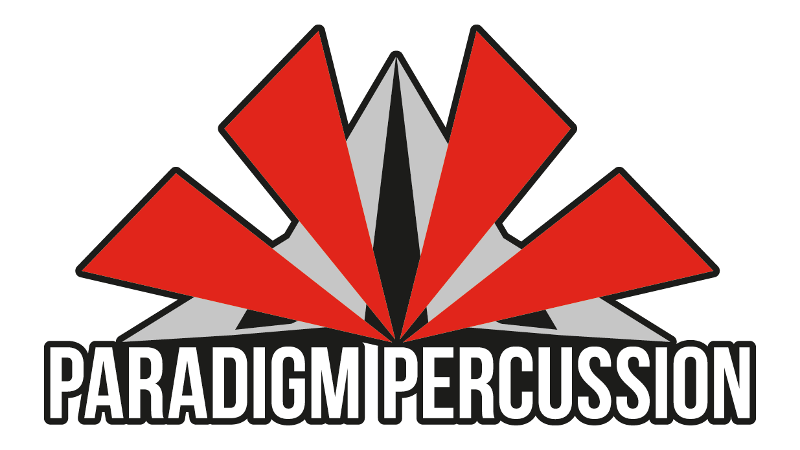
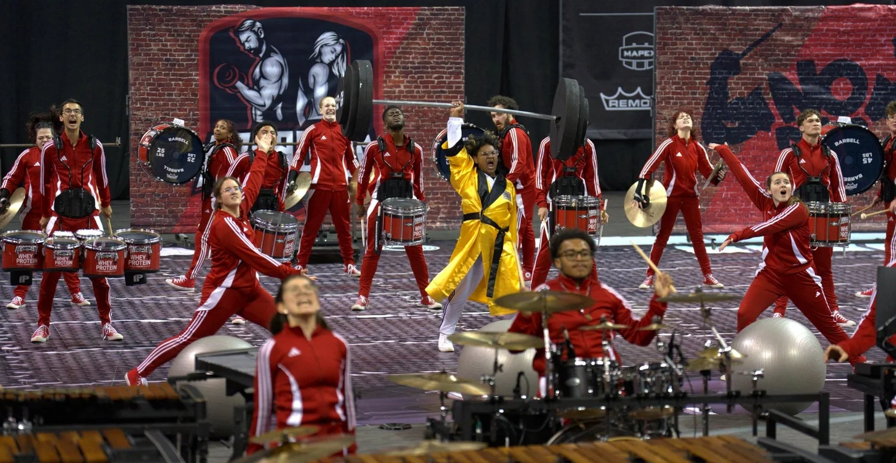
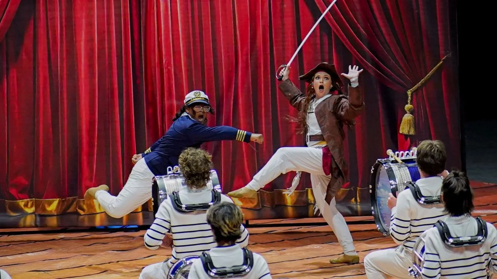

Performer
Indoor percussion with Paradigm and flute with the UNC Charlotte Symphonic Band.
03 / Music
At Paradigm Percussion, I perform and take responsibility for electronics setup and live troubleshooting. I have also performed on flute with the UNC Charlotte Symphonic Band, been selected for WGI’s 2025 Future Leaders Program in percussion, arranged music for percussion and flute ensembles, and taught both band and math one-on-one.
Indoor percussion with Paradigm and flute with the UNC Charlotte Symphonic Band.
Rebuilding recorded music for indoor front ensemble, percussion and rhythm ensemble, and flute choir.
Setting up the system, troubleshooting live, and documenting it so the ensemble can repeat the work.
PERFORMANCE / ELECTRONICS / ARRANGING
Performance + leadership / Paradigm, UNC Charlotte, and WGI
Most of this work has been in indoor percussion, where I perform and also handle electronics. Concert band, WGI Future Leaders, and one-on-one teaching have given me a few other ways to learn the same music from the player, technician, and teacher sides.
Paradigm Percussion / Performer + electronics

Paradigm is an independent indoor percussion ensemble from Iron Station, North Carolina, competing in WGI and CWEA. I joined in 2022 and took responsibility for electronics setup and live troubleshooting alongside performing.
I test signal paths, trace failures, and built wiring diagrams and setup procedures so more people can understand the system and set it up consistently. Paradigm earned WGI Independent Open Fan Favorite recognition in 2024, 2025, and 2026.
Paradigm past shows

WGI / 2025 Future Leaders Program
I was selected for the percussion section of the 2025 class. The program covers leadership, public service, artistic development, instruction, and judging. My main interests are equipment reliability, performer safety, and making technical information easier for a group to use.
2025 class announcementUNC Charlotte / Symphonic Band
I performed with the UNC Charlotte Symphonic Band at the Anne R. Belk Theater. Playing in a wind ensemble gave me another view of balance, phrasing, and what a written part feels like from the player’s chair. I carry that perspective into my arranging.
Spring 2025 programMGSD / Music Director + one-on-one teaching
I served as Music Director with MGSD, which put me on the teaching and rehearsal side of the ensemble. I have also taught one-on-one sessions that were roughly 30 minutes of math and 30 minutes of band. Both made me practice finding the first place an idea stopped making sense, then giving one useful next step instead of a long speech.
Selected arranging / Score + sound
I use arranging to work through range, balance, setup, and what will still be clear in rehearsal. The audio previews are here; if you want to look at a score, send me a message.
Michael League / arranged by Caden Trahan
Indoor front ensemble · Advanced · WGI lot tune
I arranged this as an advanced WGI lot tune for a large indoor front ensemble. The work was in keeping the original groove and color clear across the ensemble while giving each section a playable role.
Seal / arranged by Caden Trahan
Six-part flute choir · Intermediate–advanced · Choral harmony
I treated this six-part flute choir like a vocal ensemble, moving close harmony through different registers while keeping the melody clear and giving the low voices a useful foundation.
Benny Greb / transcribed and arranged by Caden Trahan
Percussion + rhythm ensemble · Advanced · Lot tune + teaching piece
I worked from the produced music, listening for each layer and rebuilding it for a percussion and rhythm ensemble. I use the arrangement as a lot tune and as a teaching piece for polyrhythms, changing meters, and keeping a quintuplet feel together.
Ernesto Lecuona / trombone quintet study in progress
I am developing a five-part trombone setting by comparing the piano work with later drum corps and ensemble interpretations. I am studying how each version uses register, articulation, pacing, and weight before deciding what belongs in mine.
The Paradigm logo comes from my local program files. The two performance images are from Paradigm's official Past Shows page, linked below. The page background is licensed stock photography by Yan Krukau via Pexels and does not show me or Paradigm.